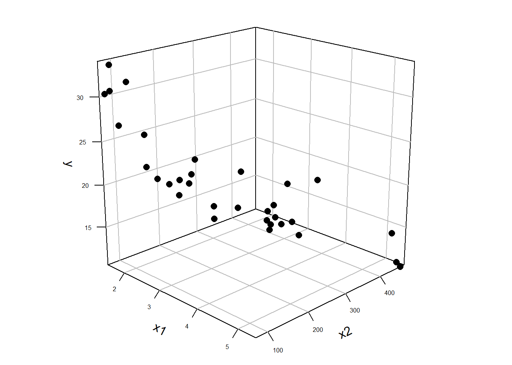
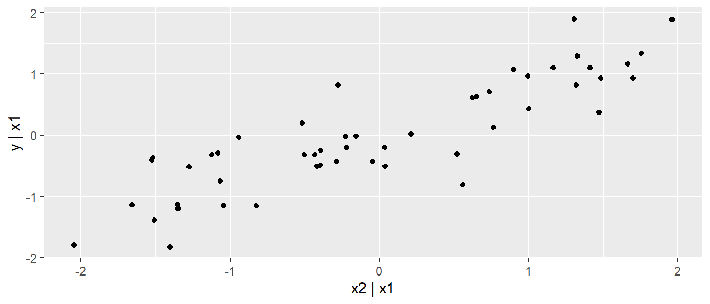

| Velocity[m/s] | body mass[kg] | arm span[cm] |
|---|---|---|
| 15.8 | 70.7 | 189.2 |
| 17.2 | 63.7 | 182.0 |
| 18.3 | 76.2 | 192.1 |
| 18.4 | 64.9 | 171.1 |
| 18.4 | 63.0 | 181.1 |
17 Einführung
In vielen Fällen in der Praxis liegt selten der einfache Fall vor, dass eine abhängige Variable mittels nur einer einzigen Prädiktorvariablen erklärt bzw. vorhergesagt werden soll. Sondern meisten sind mehrere Prädiktorvariablen an dem Prozess beteiligt der modelliert werden soll. Ein Beispiel aus der Literatur ist eine Untersuchung von Debanne und Laffaye (2011) über den Zusammenhang zwischen der Wurfgeschwindigkeit in Abhängigkeit vom Körpergewicht und der Armspannweite im Handball. In Tabelle 17.1 ist ein Ausschnitt aus dem Datensatz abgebildet.
Im Prinzip könnte der isolierte Einfluss der beiden Prädiktorvariablen Körpermasse und Armspannweite auf die abhängige Variable die Wurfgeschwindigkeit einzeln untersucht werden. Allerdings ist oft von größerem Interesse zu untersuchen, wie sich die beiden Variablen zusammen verhalten und ob durch die Kombination der beiden Variablen ein besseres Modell erstellt werden kann. Aus dieser Problemstellung heraus ergibt sich die Notwendigkeit von der einfachen linearen Regression auf eine multiple multiple lineare Regression überzugehen. Formal geschieht dies einfach dadurch, dass die Formel der einfachen Regression mit dem Prädiktor \(X\) um eine zweite oder mehr Variablen erweitert wird. Dementsprechend wird aus:
\[\begin{equation} y_i = \beta_0 + \beta_1 x_i + \epsilon_i \end{equation}\]
die Formel für die multiple Regression mit:
\[\begin{equation} y_i = \beta_0 + \beta_1 x_{1i} + \beta_2 x_{2i} + \dots + \beta_K x_{Ki} + \epsilon_i \end{equation}\]
Da bei der einfachen Regression nur eine einzige \(X\)-Variable in der Formel vorhanden war, ist kein Index notwendig gewesen. Bei der multiplen Regression mit mehreren Prädiktorvariablen \(X\) wird jeder \(X\) Variable ein zusätzlicher Index \(j\) angehängt um die Variablen eindeutig identifizieren zu können. Per Konvention, wobei diese leider nicht global eingehalten wird, wird die Anzahl der Prädiktorvaiablen mit \(K\) bezeichnet (oft auch \(p\)). Der y-Achsenabschnitt erhält wieder den Index \(j=0\) und die weiteren Steigungskoeffzienten \(\beta_1\) bis \(\beta_K\) erhalten den Prädiktorvariablen \(X_j\) folgend den entsprechenden Index.
In welcher Reihenfolge die Prädiktorvariablen mit \(j=1, j=2, \ldots, j=K\) verteilt werden hat zunächst keine Auswirkung auf das Modell und regelt lediglich die Bezeichnung. In unserem konkreten Fall der Handballwurfdaten wäre zum Beispiel eine mögliche Zuordnung, das \(X_1\) die Körpermasse und \(X_2\) die Armspannweite kodiert.
| \(i\) | Velocity[m/s] | body mass[kg] \(j=1\) | arm span[cm] \(j=2\) |
|---|---|---|---|
| 1 | 15.8 | 70.7 | 189.2 |
| 2 | 17.2 | 63.7 | 182.0 |
| 3 | 18.3 | 76.2 | 192.1 |
| 4 | 18.4 | 64.9 | 171.1 |
| 5 | 18.4 | 63.0 | 181.1 |
Rein formal haben wir jetzt schon den Übergang zur multiple Regression vollzogen. Die Frage die sich natürlich direkt anschließt bezieht sich nun auf die Bedeutung der Koeffizienten \(\beta_1, \ldots, \beta_k\) und wie sich die weiteren Konzepte die wir vorher bei der einfachen Regression kennengelernt haben auf die multiple Regression übertragen.
Beispiel 17.1 In Riechman u. a. (2002) wurde ein Modell erstellt um die Leistung beim 2000m Indoor-Rudern von 12 Wettkampfruderinnen anhand eines 30-Sekunden-Ruder-Sprints, der maximalen Sauerstoffaufnahme und der Ermüdung vorherzusagen. Die Autoren bestimmten das folgende Modell: \[\begin{equation*} Zeit_{\text{2000m}} = 567.29-0.163\cdot\text{Power }-14.213\cdot \dot{V}0_{2\text{max}} + 0.738\cdot\text{Fatigue} \end{equation*}\] Mit einem Standardfehler von \(\hat{\sigma} = 0.96\).
17.1 Bedeutung der Koeffizienten bei der multiplen Regression
Um die Bedeutung der Regressionskoeffzienten bei der multiple Regression besser zu verstehen ist es von Vorteil sich noch einmal die Bedeutung der Koeffizienten im einfachen Regressionsmodell zu vergegenwärtigen (siehe Abbildung 17.1).

Bei der einfachen Regression haben wir mittels der Methode der kleinsten Quadrate eine Regressiongerade durch die Punktwolke der Daten gelegt. Dabei haben wir die Regressionsgerade so gewählt, dass die senkrechten Abstände der beobachteten Punkte von der Regressionsgerade minimiert werden bzw. die Abstände zwischen denen auf der Gerade liegenden, vorhergesagten Werte \(\hat{y}_i\) und den beobachteten Wert \(Y_i\) (Residuen). Wenn wir nun den Übergang von einer Prädiktorvariablen zum nächstkomplizierteren Fall nehmen mit zwei Prädiktorvariablen \(X_1\) und \(X_2\), dann wäre eine mögliche Darstellungsform der Daten eine Punktwolke im dreidimensionalen Raum (siehe Abbildung 17.2 (a)).


Da jetzt eine einzelne Gerade nicht mehr in der Lage ist die Daten zu fitten, ist die nächste Möglichkeit eine Ebene in die Punktwolke zu legen (siehe Abbildung 17.2 (b)). Dies ermöglicht dann genau die gleiche Herangehensweise wie bei der einfachen linearen Regression anzuwenden. Als Zielgröße wird aus den möglichen Ebenen diejenigen gesucht deren vorhergesagten, auf der Ebene liegenden, Punkte \(\hat{y}_i\) die geringsten, senkrechten Abstand zu den beobachteten Punkten \(y_i\) haben (wieder Residuen). Anders, wir suchen diejenigen Ebene durch die Punktwolke deren Summe der quadrierten Residuen \(e_i = y_i - \hat{y}_i\) minimal ist.
Diese Herangehensweise hat den Vorteil, dass sie zum einem die einfache lineare Regression als Spezialfall mit \(K=1\) beinhaltet und sich beliebig erweitern lässt mit der Einschränkung, dass bei \(K>2\) die dreidimensionale Darstellung mittels einer Grafik nicht mehr möglich ist da nicht ausreichend Dimensionen dargestellt werden können. Das Prinzip der Minimierung der Abweichungen von \(\hat{y}_i\) zu \(y\) von einer Ebene bleibt aber weiter erhalten. D.h. alle Einsichten die wir im Rahmen der einfachen linearen Regression gelernt haben, lassen sich direkt übertragen.
Zusammenfassend:
- Die Berechnungen beim Übergang von der einfachen zur multiplen Regression bleiben alle gleich
- Abweichungen \(\hat{\epsilon_i}\) sind jetzt nicht mehr Abweichungen von einer Gerade sondern von einer \(K\)-dimensionalen Hyperebene. Die Eigenschaften der Residuen bleiben aber alle erhalten.
- Die Modellannahmen bleiben gleich: Unabhängige \(y_i\) und \(\epsilon_i \sim \mathcal{N}(0,\sigma^2)\) iid
- Inferenz für die Koeffizienten mittels \(t_k = \frac{\hat{\beta}_k}{s_k} \sim t(N-K-1)\) bleiben erhalten und übertragen sich auf die Konfidenzintervall
- Konzepte für die Vorhersage bleiben erhalten
- Modelldiagnosetools bleiben ebenfalls alle erhalten
Als nächster Schritt versuchen wir nun die Interpretation der Koeffizienten im multiplen Regressionsmodell besser zu verstehen.
Fangen wir mit einem einfachen Beispiel an. Wir gehen von einem DGP mit den folgenden Modellwerten aus.
\[\begin{align*} y_i &= \beta_0 + \beta_1 \cdot x_{1i} + \beta_2 \cdot x_{2i} + \epsilon_i \\ \beta_0 &= 1 ,\beta_1 = 3, \beta_2 = 0.7 \\ \epsilon_i &\sim N(0,\sigma = 0.5) \end{align*}\]
Übersetzt in R code bedeutet dies, wenn wir \(x_1\) und \(x_2\) als Gleichverteilt aus \(U(-2,2)\) ansehen.
N <- 50 # Anzahl Datenpunkte
beta_0 <- 1 # y-Achsenabschnitt
beta_1 <- 3 # 1. Steigungskoeffizient
beta_2 <- 0.7 # 2. Steigungskoeffizient
sigma <- 0.5 # Standardabweichung der Residuen
set.seed(123)
df <- tibble(
x1 = runif(N, -2, 2),
x2 = runif(N, -2, 2),
y = beta_0 + beta_1*x1 + beta_2*x2 + rnorm(N, 0, sigma)) # DGPWenn wir die Prädiktorvariblen \(x_1\) und \(x_2\) gegen \(y\) jeweils in einem Streudiagramm abtragen erhalten wir die folgenden Abbildungen (siehe Abbildung 17.3).


Der Zusammenhang zwischen \(x_1\) und \(y\) ist ziemlich klar (siehe Abbildung 17.3 (a)), während das Streudiagramm für \(x_2\) gegen \(y\) nicht ganz so eindeutig ist (siehe Abbildung 17.3 (b)). Fitten wir das Modell mittels lm() in R. Die beiden Variablen gehen dem DGP folgend additiv in das Modell ein. Daher benutzen wir in der Modellformulierung für lm() y ~ x1 + x2 (Tip: Im Kapitel zur einfachen Regression ist ein kurzer Primer zur Modellformulierung).
mod <- lm(y ~ x1 + x2, df)Wenn wir uns das gefittete Modell in summary() anschauen erhalten die folgenden Modellkoeffizienten \(\beta_0, \beta_1\) und \(\beta_2\).
| \(\hat{\beta}\) | \(s_e\) | |
|---|---|---|
| (Intercept) | 1.077 | 0.066 |
| x1 | 2.965 | 0.056 |
| x2 | 0.708 | 0.060 |
| \(\hat{\sigma}\) | 0.460 |
In Tabelle 17.2 sehen wir, dass wir die Koeffizienten des DGP wieder sehr gut wiederherstellen können. Das sollte uns erst mal etwas beruhigen, da es zeigt, dass wir mit unserer multiplen Regression eigentlich ganz gut arbeiten können und das Modell in der Lage ist die wahren Modellparameter im Rahmen der Stichprobenunsicherheit abschätzen zu können.
Die Interpretation von \(\beta_1\) ist gleich derjenigen bei der einfachen linearen Regression allerdings mit einer kleinen Erweiterung. Zwei Objekte die sich in \(x_1\) um eine Einheit voneinander unterscheiden und den gleichen Wert in \(x_2\) haben, unterscheiden sich in der abhängigen Variablen \(y\) um den Steigungskoeffizienten \(\beta_1\). Die gleiche Interpretation mit den Rollen vertauscht trifft ebenfalls auf \(\beta_2\) zu. Zwei Objekte die sich in \(x_2\) um eine Einheit unterscheiden und den gleichen Wert für \(x_1\) haben unterscheiden sich in \(y\) um \(\beta_2\).
Schauen wir uns nun an, wie die Koeffizienten zustanderkommen. Dazu machen wir erst einmal einen kleinen Umweg. Wir erstellen uns eine neue Prädiktorvariable \(x_1^*\). Wir erhalten \(x_1^*\) indem wir eine Regression von \(x_1\) auf \(x_2\) berechnen. Also das Modell:
\[\begin{equation*} x_{1i} = \beta_0 + \beta_1 x_{2i} + \epsilon_i \end{equation*}\]
D.h. wir versuchen \(x_1\) mittels \(x_2\) vorherzusagen. Wir stellen uns die Frage wenn wir \(x_2\) kennen, wie viel Information gibt uns dies über \(x_2\). Wenn ein perfekter linearer Zusammenhang zwischen \(x_1\) und \(x_2\) besteht dann wäre die Information von \(x_2\) über \(x_1\) ebenfalls perfekt. Wenn ich weiß welchen Wert \(x_2\) hat, dann weiß ich auch welchen Wert \(x_1\) hat. Entsprechend umso schwächer der lineare Zusammenhang zwischen \(x_1\) und \(x_2\) ist, umso weniger Information besitzt \(x_1\) über \(x_2\).
Gehen wir jetzt noch einen Schritt weiter uns nehmen aus dem Regressionmodell von \(x_1\) gegen \(x_2\) die Residuen \(e_i\). Können wir diese auch im Rahmen der Information von \(x_2\) über \(x_1\) interpretieren. Nun, die Residuen \(e_i\) beziffern genau denjenigen Teil der Varianz von \(x_1\) den wir nicht mit Hilfe des Regressionsmodells von \(x_1\) gegen \(x_2\) aufklären können. D.h. die Residuen \(e_i\) in diesem Modell sind die Varianz von \(x_1\) um den Anteil von \(x_2\) bereinigt.
\[\begin{equation} e_i = x_{1i} - \beta_0 - \beta_1 x_{2i} \label{eq-mlm-basics-coef-01} \end{equation}\]
Nochmal, die Residuen \(e_i\) stellen denjenigen Teil der Varianz von \(x_1\) dar, der sich nicht durch \(x_2\) vorhersagen lässt. Eben derjenige Teil der Varianz von \(x_1\) der um den Teil von \(x_2\) bereinigt wurde. Die Residuen \(e_i\) aus Formel \(\eqref{eq-mlm-basics-coef-01}\) verwenden wir nun als neue Prädiktorvariablen \(x_1^*\).
Im nächsten Schritt verwenden wir \(x_1^*\) um eine einfache lineare Regression von \(y\) gegen \(x_1^*\) durchzuführen.
\[\begin{equation*} y_i = \beta_0 + \beta_1 x_{1i}^* \end{equation*}\]
In R entsprechend:
mod_x1_star<- lm(x1 ~ x2, df)
x1_star <- resid(mod_x1_star)
mod_y_x1_star <- lm(y ~ x1_star, df)Schauen wir uns nun die Koeffizienten an (siehe Tabelle 17.3)
| \(\hat{\beta}\) | \(s_e\) | |
|---|---|---|
| (Intercept) | 1.250 | 0.164 |
| x1_star | 2.965 | 0.141 |
Der Steigungskoeffizient \(\beta_1\) ist genau derjenige aus dem Modell mit beiden Variablen (siehe Tabelle 17.2).
Wenig überraschend, wenn wir das gleiche Verfahren auf \(x_2\) anwenden.
mod_x2_star <- lm(x2 ~ x1, df)
x2_star <- resid(mod_x2_star)
mod_y_x2_star <- lm(y ~ x2_star, df)
coef(mod_y_x2_star)[2] x2_star
0.7081505 Erhalten wir den Steigungskoeffizienten für \(\beta_2\) aus dem Modell mit beiden Variablen. Das gleiche Prinzip generalisiert auch für mehr als zwei Variablen, nur das wir hier dann nicht mehr die Regression der Variable \(x_i\) gegen eine andere \(x_j\) Variable berechnen sondern \(x_i\) gegen alle anderen Prädiktorvariablen \(x_j, j = 1, i-1,i+1,K\).
Dadurch ergibt sich die folgende Interpretation der Steigungskoeffizienten \(\beta_i\) im multiplen Regressionsmodell. Der Steigungskoeffizient \(\beta_i\) drückt die Information der Variable \(x_i\) aus, wenn der gemeinsame Anteil von \(x_i\) mit allen anderen Prädiktorvariablen \(x_j, j \neq i\) rausgerechnet, bereinigt wurde. Anders interpretiert, welche zusätzliche Information erhalten wir, wenn wir die Variable \(x_i\) in das Modell integrieren, wenn wir schon alle anderen Variablen \(x_j, j \neq i\) im Modell haben. D.h. das multiple Regressionsmodell kontrolliert automatisch immer den Einfluss der anderen \(K-1\) Variablen bei der Betrachtung der Variablen \(x_i\). Nochmal als Liste:
- \(\hat{\beta}_1\): Wenn ich \(x_2\) weiß, welche zusätzlichen Informationen bekomme ich durch \(x_1\)
- \(\hat{\beta}_2\): Wenn ich \(x_1\) weiß, welche zusätzlichen Informationen bekomme ich durch \(x_2\)
Bezogen auf die Werte der Steigungskoeffzienten \(\beta_i\) ist die Bedeutung immer noch wie oben, wenn sich zwei Objekte auf der Variablen \(x_i\) um eine Einheit voneinander unterscheiden und alle anderen Variablen den gleichen Wert haben, dann unterscheiden sich die erwarteten (vorhergesagten) Werte \(\hat{y}_i\) laut des Modells um \(\beta_i\).
Die Eigenschaft, dass die anderen Variablen \(x_j\) konstant gehalten werden ist dabei auch das Problem wenn wir ein einfaches Streudiagramm \(y_i\) gegen \(x_i\) bei einer multiplen linearen Regression wie in Abbildung 17.3 erstellen. In Abbildung 17.3 (a) können wir den Einfluss von \(x_1\) sehr gut identifizieren, da der Steigungskoeffizient \(\beta_1\) im Verhältnis zu \(\sigma\) recht groß ist. Im Falle von Abbildung 17.3 (b) ist dies nicht der Fall. Ein Möglichkeit trotzdem mit Hilfe von einfachen Streudiagrammen den isolierten Zusammenhang der Prädiktorvariablen \(x_i\) auf die abhängige \(y_i\) zu untersuchen bieten added-variable plots.
17.2 Added-variable plots
Die Idee hinter added-variable plots basiert auf unserem Trick von eben mit den Residuen \(e_i\). Neben der Bereinigung von \(x_2\) aus \(x_1\), die wir eben schon kennengelernt haben, rechnen wir zusätzlich auch noch den Einfluss von \(x_2\) aus \(y\) raus. Die beiden resultierenden Variablen stellen wir dann in einem Streudiagramm dar. In R können wir einen solchen Plot mittels des folgenden Ansatzes erstellen (siehe Abbildung 17.4).
y_star <- resid(lm(y ~ x1, df)) # Bereinigugn von y um x1
x2_star <- resid(lm(x2 ~ x1, df)) # Bereinigung von x2 um x1
ggplot(tibble(x2_star, y_star),
aes(x2_star,y_star)) +
geom_point() +
labs(x = 'x2 | x1', y = 'y | x1')

Wir sehen jetzt viel deutlicher den Zusammenhang zwischen \(x_2\) und \(y\) als dies in Abbildung 17.3 (b) der Fall war. Im Paket car gibt es eine Funktion avPlots() mit der wir die added-variable plots auch direkt erstellen können.
car::avPlots(mod)Wenn eine multiple Regression mit mehr als zwei Prädiktorvariablen gerechnet wird, dann werden im added-variable plot jeweils alle \(K-1\) Variablen aus \(x_i\) und \(y\) rausgerechnet. D.h. \(Y\) und \(X_i\) werden um den Einfluss aller, verbleibenden \(X_j, j \neq i\) bereinigt.
Da ein Steigungskoeffizientt \(\beta_i\) immer den Beitrag der Information von \(X_i\) über denjenigen der anderen Prädiktorvariablen bestimmt, stellt sich die Frage was passiert wenn im Modell eine oder mehrere Prädiktorvariablen weggelassen werden.
17.3 Was passiert wenn eine Prädiktorvariable weggelassen wird?
In Tabelle 17.4 sind noch mal die Koeffizienten aus dem Beispiel abgebildet.
| \(\hat{\beta}\) | \(s_e\) | |
|---|---|---|
| (Intercept) | 1.077 | 0.066 |
| x1 | 2.965 | 0.056 |
| x2 | 0.708 | 0.060 |
Was passiert nun, wenn wir zwei Einzelmodelle als einfache lineare Regression fitten, jeweils mit nur einer Variablen? Wir schauen uns nur die Koeffizienten an. Einmal das Modell mit nur \(X_1\):
coef(lm(y ~ x1, df))(Intercept) x1
1.007466 3.017589 Wir sehen, dass sich der Koeffizient verändert aber noch in einem ähnlichen Bereich ist. Das Gleiche nun für \(X_2\):
coef(lm(y ~ x2, df))(Intercept) x2
1.3377771 0.9555316 Der Steigungskoeffizient ändert sich hier auch wieder, bleibt aber ebenfalls in einem ähnlichen Bereich.
Jetzt können wir aber einwenden, dass in unserem Beispiel das sehr speziell ist, da nach Konstruktion des DGP \(X_1\) und \(X_2\) unabhängig voneinander sind. Als wir die Daten generiert haben, haben wir jeweils zwei unabhängige Zufallszahlenmengen erstellt. Wenn wir uns die Korrelation der Variablen ansehen, dann ist das gut nachvollziehbar.
round(cor(df),3) x1 x2 y
x1 1.000 0.078 0.969
x2 0.078 1.000 0.289
y 0.969 0.289 1.000D.h. \(X_1\) und \(X_2\) korrelieren praktisch überhaupt nicht miteinander (Warum ist die Korrelation \(r_{x_1x_2}\) nicht exakt \(=0\)). D.h. \(X_1\) enthält keine Informationen über \(X_2\) und dementsprechend sollte die beiden Beiträge zum Modell unabhängig voneinander sein.
17.4 Was passiert wenn Prädiktoren stark miteinander korrelieren?
Schauen wir uns nun einen neuen Datensatz an (Beispiel aus Kutner u. a. 2005). Im Rahmen einer Untersuchung sind Körperfettmessungen durchgeführt an \(20\) Personen durchgeführt worden. Neben einer Gesamtkörpermessung wurde auch der Körperfettanteil am Oberarm, Unterarm und am Oberschenkel bestimmt. In Tabelle 17.5 ist ein Ausschnitt der Daten angebildet.
| Oberarm | Unterarm | Oberschenkel | Gesamt |
|---|---|---|---|
| 19.5 | 43.1 | 29.1 | 11.9 |
| 24.7 | 49.8 | 28.2 | 22.8 |
| 30.7 | 51.9 | 37.0 | 18.7 |
| 29.8 | 54.3 | 31.1 | 20.1 |
| 19.1 | 42.2 | 30.9 | 12.9 |
| 25.6 | 53.9 | 23.7 | 21.7 |
Als Modell sollen der Gesamtkörperfettanteil mit Hilfe der drei Messungen bestimmt werden.
\[\begin{equation} Y_{\text{Körperfettanteil}} = \beta_0 + \beta_1 \cdot X_{\text{Oberarm}} + \beta_2 \cdot X_{\text{Unterarm}} + \beta_3 \cdot X_{\text{Oberschenkel}} + \epsilon \end{equation}\]
Schauen wir uns zunächst einmal an, wie stark die Werte miteinander korrelieren. Wir verwenden die Funktion ggpairs() aus dem GGally Paket. So erhalten wir mit wenig Aufwand eine übersichtliche Darstellung (siehe Abbildung 17.5).
GGally::ggpairs(bodyfat) 
Wie nicht anders zu erwarten, korrelieren die Prädiktorvariablen relativ stark miteinander. Die Korrelation zwischen den Oberschenkeldaten und den Oberarmdaten in dieser Stichprobe ist sogar \(>0.9\). Schauen wir uns nun an, wie sich das auf die Modellfits auswirkt, wenn wir nur Teilmengen der Prädiktorvariablen zum fitten verwenden. Insgesamt fitten wir vier verschiedene Modelle. Ein Modell mit allen Prädiktorvariablen und drei weitere bei denen wir jeweils eine der Prädiktorvariablen weglassen. In R:
# Alle drei Prädiktoren
mod_full <- lm(body_fat ~ triceps + thigh + midarm, bodyfat)
# ohne Arm
mod_wo_midarm <- lm(body_fat ~ triceps + thigh, bodyfat)
# Ohne Oberschenkel
mod_wo_thigh <- lm(body_fat ~ triceps + midarm, bodyfat)
# Ohne Triceps
mod_wo_triceps <- lm(body_fat ~ thigh + midarm, bodyfat)In Tabelle 17.6 sind nur die Steigungskoeffizienten für die vier verschiedenen Modell abgebildet.
| Oberarm | Oberschenkel | Unterarm | |
|---|---|---|---|
| Alle | 4.33 | -2.86 | -2.19 |
| ohne Unterarm | 0.22 | 0.66 | |
| ohne Oberschenkel | 1.00 | -0.43 | |
| ohne Oberarm | 0.85 | 0.10 |
Wir sehen, dass hier die Koeffizienten sich sehr stark ändern in Abhängigkeit von welche anderen Variablen in dem Modell enthalten sind. Beispielsweise änder der Koeffizient für den Oberschenkel nicht nur seine Größe und auch sein Vorzeichen, je nachdem ob der Ober- oder der Unterarm oder beide im Modell enthalten sind. Wenn mehrer Variablen in einem Modell miteinander korrelieren, dann wird dies als Multikollinearität bezeichnet.
17.5 Multikollinearität
Definition 17.1 (Multikollinearität) Wenn in einem Modell Prädiktorvariablen miteinander korrelieren, dann wird dies als Multikollinearität bezeichnet.
Multikollinearität hat verschiedene Einflüsse auf das Modell die sich vor allem hinsichtlich der Stabilität der Koeffizienten auswirken, wenn Prädiktorvariablen aus dem Modell herausgenommen werden bzw. dazugenommen werden. Dazu beeinflusst Multikollinearität auch die Größe der Standardfehler der geschätzten Koeffizienten \(\hat{\beta}_j\).
Multikollinearität hat unter anderem die folgenden Effekte:
- Große Änderungen in den Koeffizienten wenn Prädiktoren ausgelassen/eingefügt werden
- Koeffizienten haben eine andere Richtung als erwartet
- Hohe (einfache) Korrelationen zwischen Prädiktoren
- Breite Konfidenzintervalle für “wichtige” Prädiktoren \(b_j\)
Es lässt sich zeigen, dass die Varianz der geschätzen Modellkoefizienten \(b_j\) die folgende Form hat (siehe Formel \(\eqref{eq-mlm-basics-varb_j}\):
\[\begin{equation} \widehat{\text{Var}}(b_j) = \frac{\hat{\sigma}^2}{(n-1)s_j^2}\frac{1}{1-R_j^2} \label{eq-mlm-basics-varb_j} \end{equation}\]
Der Term \(R_j^2\) wird als multipler Korrelationskoeffizient bezeichnet und berechnet sich als der Determinationskoeffizienten der Prädiktorvariablen \(x_i, i\neq j\) auf die Prädiktorvariable \(x_j\). D.h. es wird ein Regressionsmodell gerechnet bei dem die Prädiktorvariable \(x_j\) als abhängige Variable verwendet wird und mittels der anderen \(p-1\) Präditkorvariablen modelliert wird.
Der zweiter Term in Formel \(\eqref{eq-mlm-basics-varb_j}\) \(\frac{1}{1-R_j^2}\) wird als Variance Inflation Factor (VIF) bezeichnet. Anhand des VIF kann ein Modell relativ einfach, zumindest heuristisch, auf Multikollinearitäten überprüft werden. Dabei wird für jede Prädiktorvariable die VIF bestimmt. Manchmal wird in der Literatur auch die sogenannte Tolerance = \(\frac{1}{VIF}\) betrachtet.
\[\begin{equation*} \text{VIF}_j = \frac{1}{1-R_j^2} \end{equation*}\]
Üblicherweise wird der größte VIF Wert betrachtet um die Multikollinearität eines Modells zu bewerten.
Tipp
Wenn VIF > 10 ist, dann deutet dies auf hohe Multikollinearität hin.
Hinsichtlich des Einflusses bzw. des Umgangs bei Multikollinearität muss unterschieden werden, welches Ziel die Modellierung verfolgt. Das Problem das durch die Multikollinearität entsteht ist, basiert darauf das das Modell nicht eindeutig zuordnen kann, welche der korrelierten Varible zuständig ist für die beobachteten Veränderungen in der abhängigen Variablen. Multikollinearität vermindert dabei nicht unsere Fähigkeit Mittelwerte \(E[y|x]\) vorherzusagen oder einen guten Modellfit zu erhalten. Allerdings verkompliziert sich die Interpretation der Modellkoeffizienten \(b_j\). Dadurch das die Prädiktorvariablen miteinander korrelieren, kann es beispielsweise gar nicht praktisch möglich sein die Variablen einzeln zu variieren, wodurch die Interpretation des Koeffizienten \(b_j\) als die Veränderung von \(y\) bei Veränderung von \(x_j\) um eine Einheit problematisch wird. Weiterhin, dadurch das durch die Multikollinearität die Varianzen der Modelkoeffizienten vergrößert werden, kann es zu dem Fall kommen, dass ein Modellkoeffizienten \(b_j\) statistisch nicht signifikant ist, obwohl eindeutig ein Zusammenhang zwischen \(x_j\) und \(y\) besteht. Zusätzlich, dadurch das die Modellkoeffizienten sich stark verändern können bei Veränderung des Modells ist deren Interpretation grundsätzlich problematisch.
17.5.1 Variance Inflation Factor (VIF) in R
In R können wir den VIF am einfachsten über zwei Funktionen berechnen. Einmal über die vif()-Funktion aus dem Paket car.
car::vif(mod_full) triceps thigh midarm
708.8429 564.3434 104.6060 Eine weitere Möglichkeit besteht mittels der Funktion check_collinearity() aus dem performance Paket.
performance::check_collinearity(mod_full)check_collinearity()
| Term | VIF | VIF_CI_low | VIF_CI_high | SE_factor | Tolerance | Tolerance_CI_low | Tolerance_CI_high |
|---|---|---|---|---|---|---|---|
| triceps | 708.8429 | 383.98652 | 1309.2486 | 26.62410 | 0.0014107 | 0.0007638 | 0.0026043 |
| thigh | 564.3434 | 305.76950 | 1042.2977 | 23.75591 | 0.0017720 | 0.0009594 | 0.0032704 |
| midarm | 104.6060 | 56.91565 | 192.9714 | 10.22771 | 0.0095597 | 0.0051821 | 0.0175699 |
In Tabelle 17.7 sehen wir, dass check_collinearity() auch noch Konfidenzintervalle und besagte Tolerance ausgibt. In jedem Fall, sehen wir, dass wenn wir die Daumenregel \(VIF > 10\) anwenden, wir hohe Multikollinearität in unserem Modell aufweisen, was auch die großen Veränderung in den Koeffizienten bei Hinzu- bzw. Entnahme der Prädiktorvariblen erkärt.
17.6 Verhältnis der Prädiktorvariblen \(x_j\) untereinander
Insgesamt sind aus der operativen Seite durch den Übergang von der einfachen zur multiplen Regression keine großen Neuerungen hinzugekommen. Allerdings müssen jetzt, wir schon bezüglich der Multikollinearität gesehen haben, das Verhältnis der Prädiktorvariablen \(X_j\) untereinander näher betrachtet werden. Das folgenden Beispiel ist McElreath (2016) entnommen und zeigt, dass sich Variablen auch gegenseitig maskieren können und wiederum große Veränderungen in den Modellkoeffizienten auftreten können, wenn Variablen hinzugenommen bzw. weggelassen werden.
Um den Effekt der Maskierung leichter nachvollziehen zu können erstellen wir uns wieder einen einfachen Datensatz mit zwei Prädiktorvariablen \(X_{pos}\) und \(X_{neg}\). \(X_{pos}\) ist positiv mit \(Y\) korreliert, während \(X_{neg}\) negativ mit \(Y\) korreliert. Allerdings zeigen die beiden Variablen untereinander ebenfalls eine positive Korrelation. In Abbildung 17.6 ist die Korrelationsmatrize der drei Variablen abgebildet.

In Tabelle 17.8 sind die verschiedenen Modellkoeffizienten für wenn jeweils nur eine der Variablen in das Modell eingeht bzw. wenn beide Variablen im Modell enthalten sind.
| \(\beta_0 \pm s_e\) | \(\beta_{pos} \pm s_e\) | \(\beta_{neg} \pm s_e\) | |
|---|---|---|---|
| pos | \(0.24\pm 0.13\) | \(0.22\pm 0.15\) | |
| neg | \(0.23\pm 0.12\) | \(-0.62\pm 0.1\) | |
| pos + neg | \(0.14\pm 0.1\) | \(0.85\pm 0.12\) | \(-0.98\pm 0.1\) |
Wir können erkennen, dass die Größe der Koeffizienten wiederum stark davon abhängt welches Modell gefittet wird. Für das Modell mit nur dem positiven Prädiktor ist der Modellkoeffizient \(b_{pos}\) auch nicht statistisch signifikant. Sondern erst wenn beide Variablen in dem Modell inkludiert sind ist der Koeffizient ebenfalls statistisch signifikant. Zusammenfassend ist es entsprechend wichtig dass bei der Modellierung theoretische Vorüberlegungen die relevanten Variablen identifizieren und nicht einfach nur hin und her probiert wird. Zumindest wenn es darum geht der größer der Koeffizienten auch inhaltliche Bedeutung zuzuweisen.
17.7 Zum Nacharbeiten
Die folgenden Texte eignen sich gut um die Inhalte noch einmal zu vertiefen. Altman und Krzywinski (2015) diskutiert noch mal eingehend was passiert wenn Variablen miteinander korrelieren und wie sich das auf die Schätzer für die Koeffizienten auswirkt. (Kutner u. a. 2005, p.278–288) und (Fox 2011, p.325–327) sind nochmal als Zusammenfassungen zu lesen.